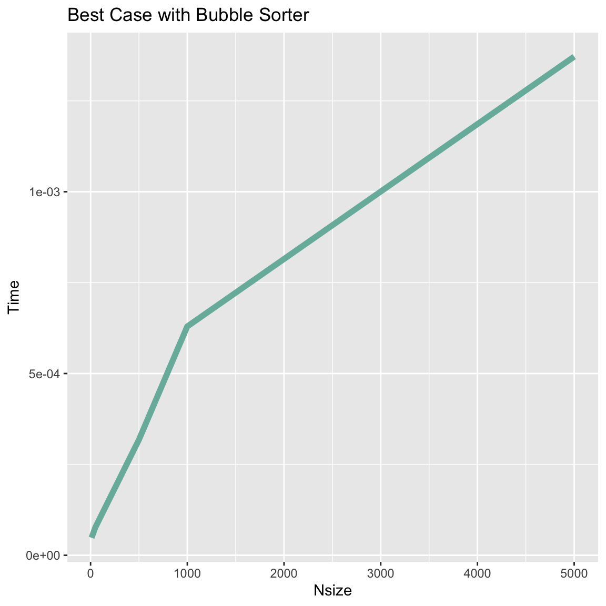
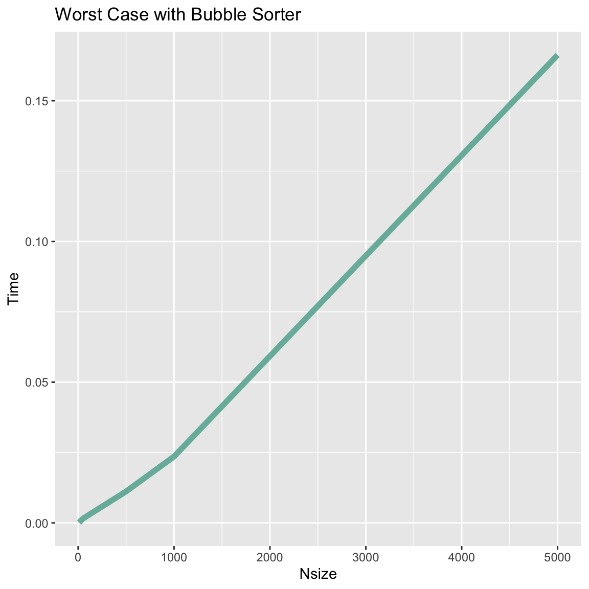
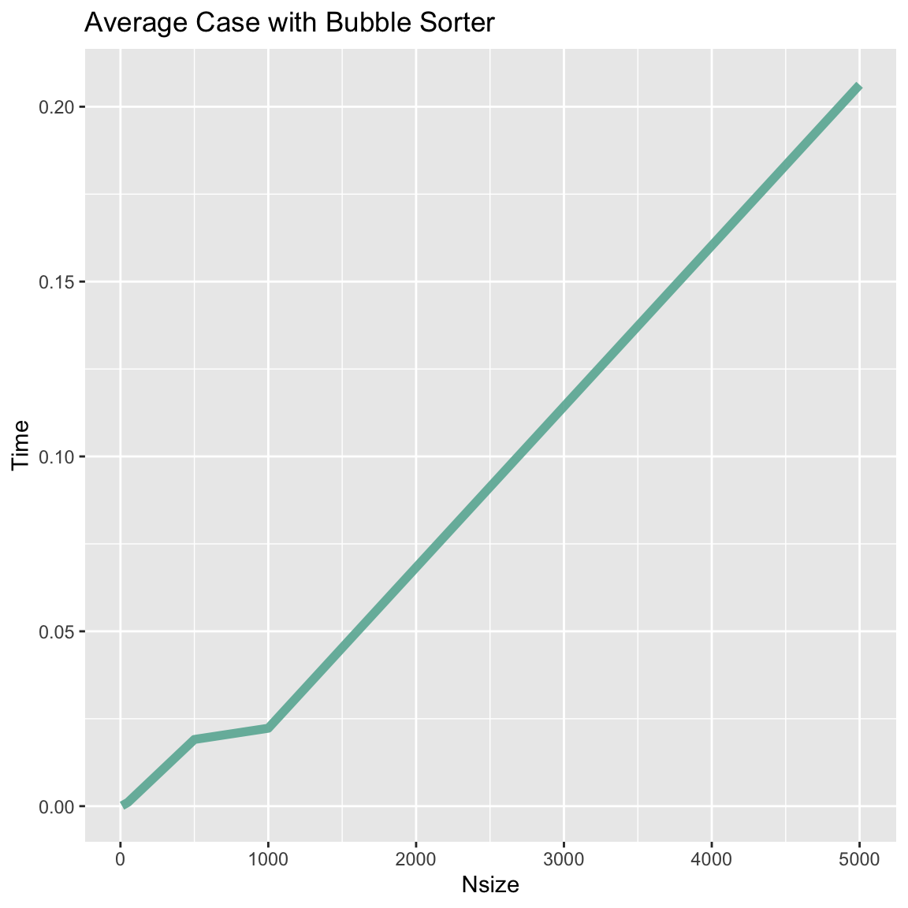
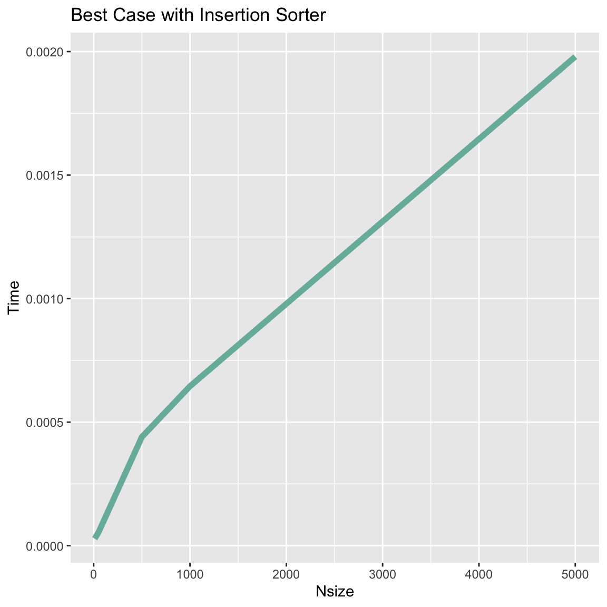
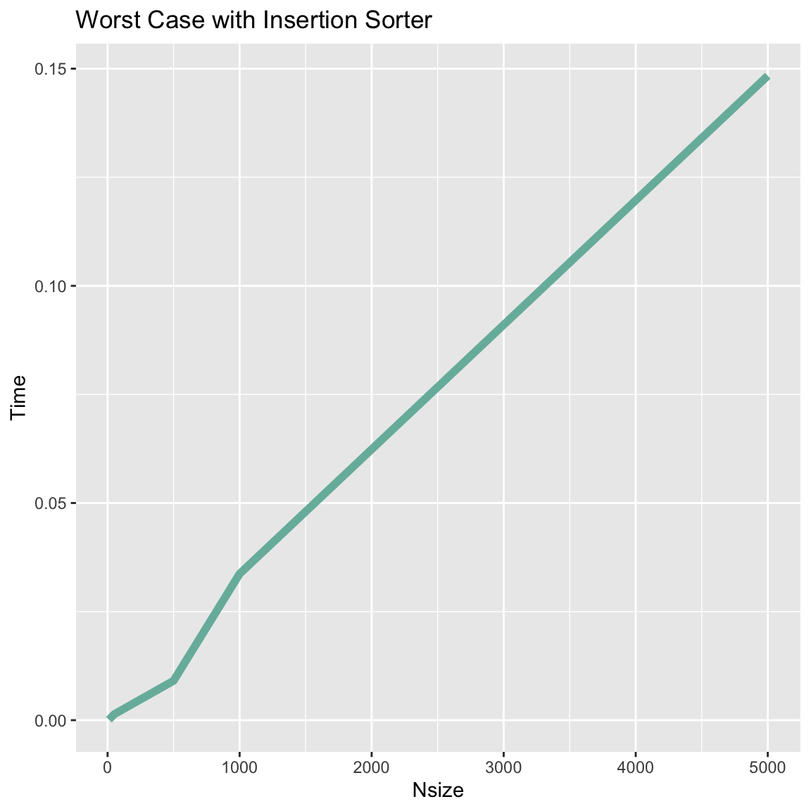
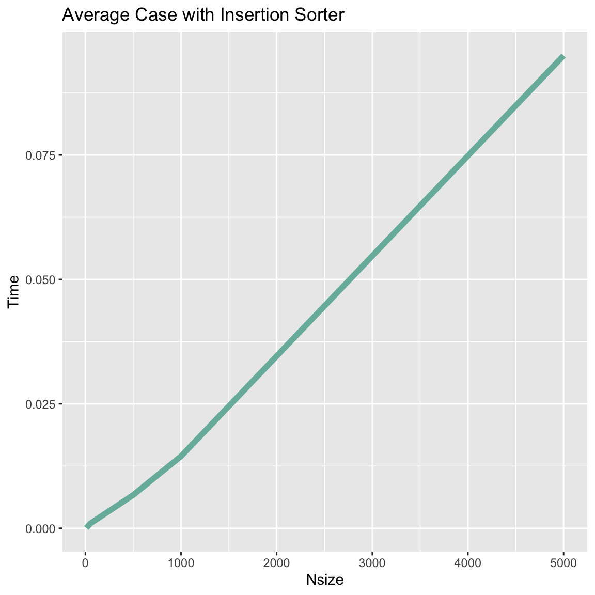
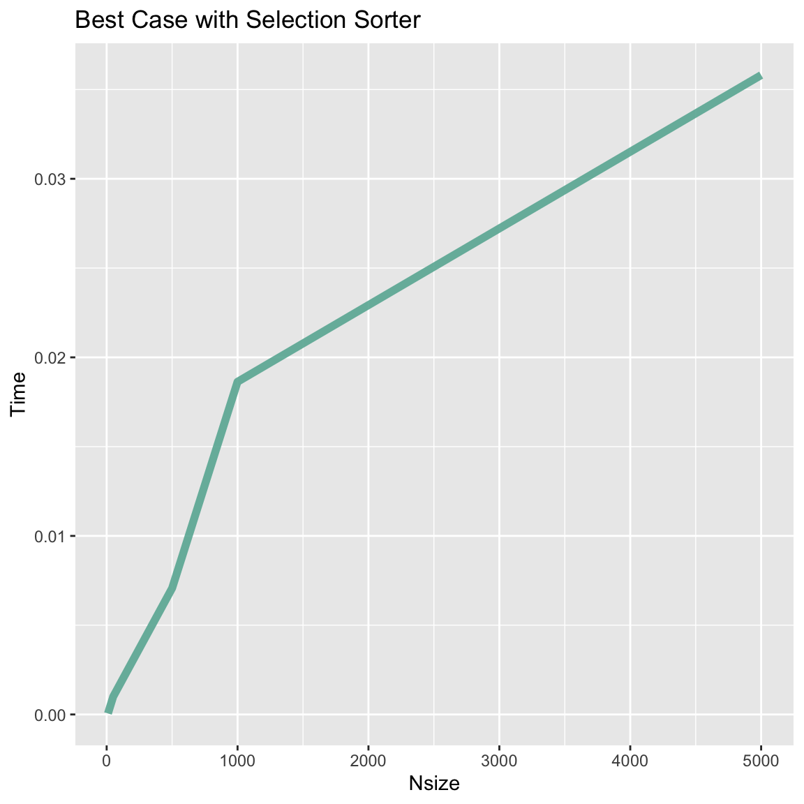
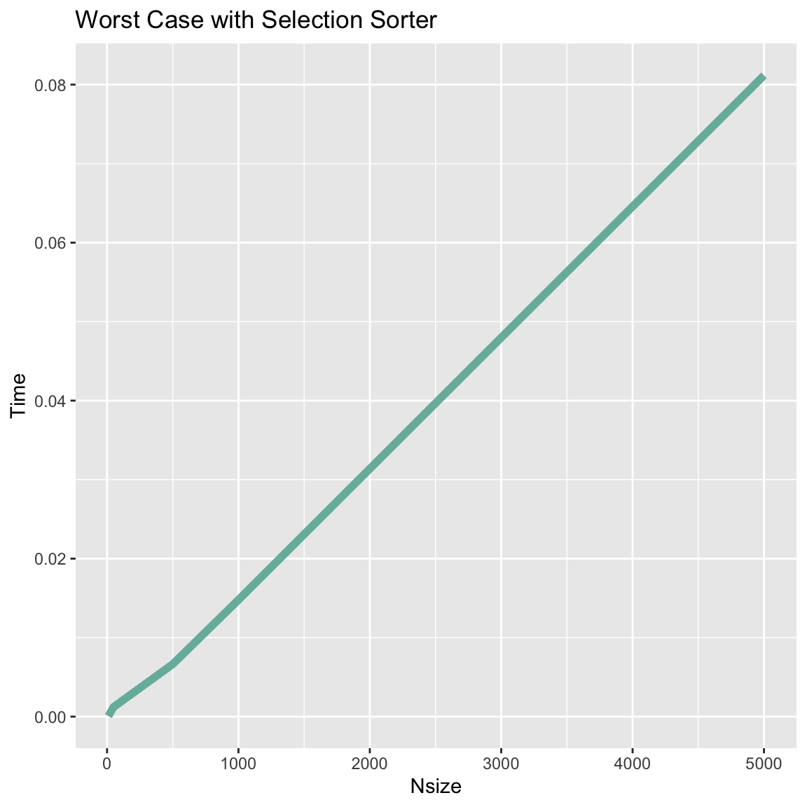
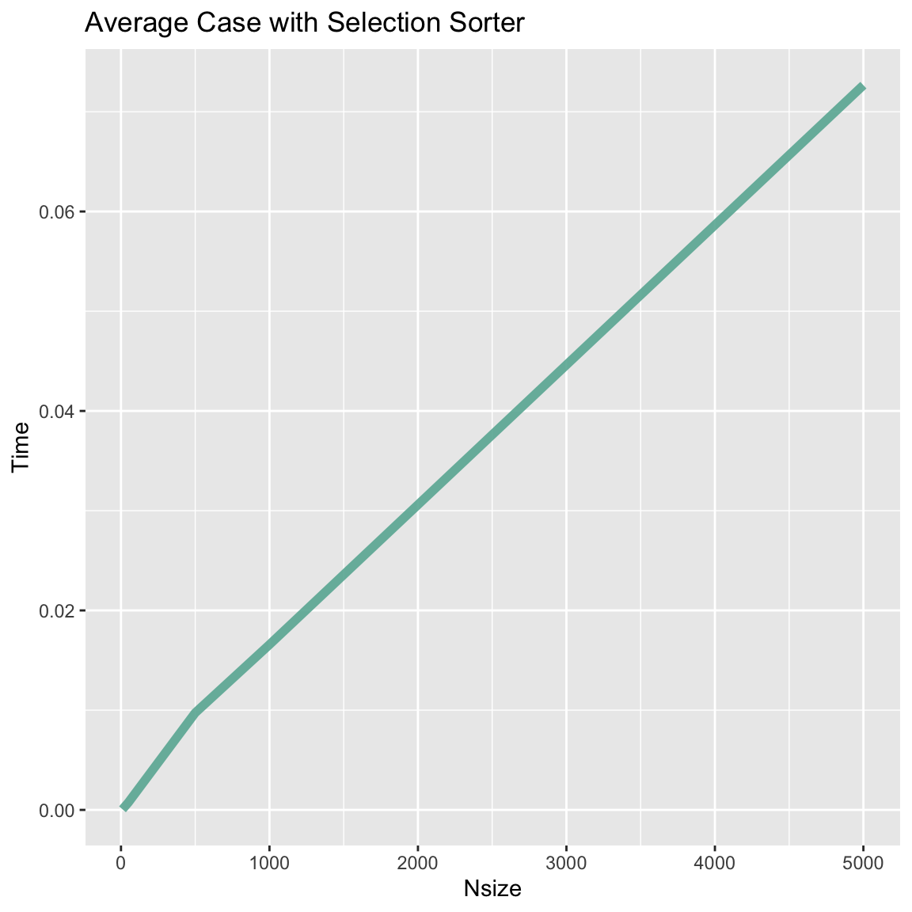
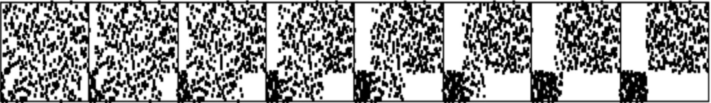

Introduction
Note: All algorithms were tested using a List of integers with N sizes of {10, 50, 500, 1000, 5000} 
Catedra
- Emilio López Gabeiras
- Pedro Colunga
- Lucas Luppani
- Alvaro Gaita
- Khalil Stessens
Bubble
Best case

Data Points
| N | Time |
|---|---|
| 10 | 4.8121E-5 |
| 50 | 7.7118E-5 |
| 500 | 3.17901E-4 |
| 1000 | 6.29483E-4 |
| 5000 | 0.001371825 |
Worst case

Data Points
| N | Time |
|---|---|
| 10 | 6.8486E-5 |
| 50 | 0.001515815 |
| 500 | 0.011173149 |
| 1000 | 0.023568484 |
| 5000 | 0.166248675 |
Average case

Data Points
| N | Time |
|---|---|
| 10 | 1.15341E-4 |
| 50 | 0.001068209 |
| 500 | 0.019075861 |
| 1000 | 0.022284249 |
| 5000 | 0.206268856 |
Conclusion
Note: This bubble algorithm used a variable so as not to go through (revisit) the section of the list that has already been sorted
Theory
- Average and worst case:
- Same amount of comparisons and exchanges.
- Comparisons ≈ (2N)/2
- Exchanges ≈ (2N)/2
- Best case:
- Comparisons ≈ (2N)/2
- Exchanges = 0
In the graphs
We can see that the worst and average cases are approximately the same, while the best case is much better since it did not need to perform any exchanges.
Because of the enhancement it performs better than the other two algorithms in the best case escenario that only involves comparisons. This is not the case in the worst and average cases because the bubble sorter involves a greater amount of swaps.
Insertion
Best case

Data Points
| N | Time |
|---|---|
| 10 | 2.8397E-5 |
| 50 | 5.3636E-5 |
| 500 | 4.39847E-4 |
| 1000 | 6.29483E-4 |
| 5000 | 0.001979316 |
Worst case

Data Points
| N | Time |
|---|---|
| 10 | 1.12969E-4 |
| 50 | 0.001358959 |
| 500 | 0.00908131 |
| 1000 | 0.033699095 |
| 5000 | 0.148375862 |
Average case

Data Points
| N | Time |
|---|---|
| 10 | 14.4753E-5 |
| 50 | 9.27765E-4 |
| 500 | 0.006678457 |
| 1000 | 0.0144707 |
| 5000 | 0.094979803 |
Conclusion
Theory
- Worst and average case: O(n²).
- Almost sorted file: O(n).

Image taken from MIT.edu (see in bibliography)
In the graphs
We know from the theory that given an almost sorted file, this algorithm will perfom better, and this shows in the graphs.
We can also see in the image above that the Insertion Sort algorithm is slightly better in number of comparisons, which explains why it performs better than Selection particularly in the best case escenario. The reason why this does not apply to Bubble sort may be that there is an enhancement in its implementation.
Selection
Best case

Data Points
| N | Time |
|---|---|
| 10 | 5.5708E-5 |
| 50 | 9.99801E-4 |
| 500 | 0.007070195 |
| 1000 | 0.018631636 |
| 5000 | 0.03580849 |
Worst case

Data Points
| N | Time |
|---|---|
| 10 | 6.2231E-5 |
| 50 | 0.001219643 |
| 500 | 0.006639129 |
| 1000 | 0.014781115 |
| 5000 | 0.081176325 |
Average case

Data Points
| N | Time |
|---|---|
| 10 | 5.8155E-5 |
| 50 | 7.48016E-4 |
| 500 | 0.009733313 |
| 1000 | 0.016573495 |
| 5000 | 0.07266654 |
Conclusion
Theory
- The Selection Sorter algorithm is:
- Non-adptive
- Quadractic in number of comparisons O(n²).
- Linear in number of exchanges O(n).
- It will always do the same amount of comparisons.
In the graphs
Once again, we can see the similarity between the average and worst case escenarios. This is the one that performs the best in the worst case scenario because it only swaps when the declared lowest value changes.
ShellSort
Description
- Generalization of InsertionSort, instead of comparing with the adjacent element, there’s a gap between the compared elements. The gap size decreases in each set of comparisons.
The result of h-sorting a file that is k-ordered is a file that is both h-and k-ordered.
Shellsort does less than O(N3/2) comparisons for the increments 1 4 13 40 121 364 1093 3280 9841 …
Shellsort does less than O(N(log N)2) comparisons for the increments 1 2 3 4 6 9 8 12 18 27 16 24 36 54 81 ….
Shellsort does less than O(N4/3) comparisons for the increments 1 8 23 77 281 1073 4193 16577 ….
- Not stable: ShellSort does not examine the elements in between the gap when compairing. Therefore, it cannot be assured that the order of duplicate keys will be respected. Example:
- In method testShellStability() the folllowing list was runned: (“1”, “2”, “3”, “4”, “5”, “6”, “7”)
- Then, it was sorted using shellsort by the length of each string (they were all length 1).
- The output was the following list: (“7”, “6”, “5”, “4”, “3”, “2”, “1”)
- It did not mainain the original order of the duplicate keys.
- In-place
First sequence
First sequence = {1, 8, 23, 77, 281, 1073, 4193, 16577}
| N | Times Runned | Data arrangement | Time taken (mS) | Order |
|---|---|---|---|---|
| 100 | 20 | RANDOM | 0.6 | 41852 |
| 1000 | 20 | RANDOM | 1.75 | 1038672 |
| 10000 | 20 | RANDOM | 35.55 | 57942473 |


Second sequence
Sequence = {1, 4, 13, 40, 121, 364, 1093, 3280 ,9841}
| N | Times Runned | Data arrangement | Time taken (mS) | Order |
|---|---|---|---|---|
| 100 | 20 | RANDOM | 0.05 | 47595 |
| 1000 | 20 | RANDOM | 1.00 | 1107009 |
| 10000 | 20 | RANDOM | 34.4 | 58497091 |


QuickSort
Description:
- Pros:
- In-place: Uses only a small auxiliary stack.
- Requires time only proportional to N log N on the average to sort N items
- Has an extremely short inner loop.
- Easy to implement.
- Cons:
- Not stable because any key might be moved past a large number of keys equal to it (which have not even been examined yet) during any exchange. There is no easy way to make an array-based quicksort stable is known. Example: In class TestStability the following list was sorted using quicksort by the length of the strings: (“1”, “2”, “3”, “4”, “5”, “6”, “7”). The output was the following list: (“5”, “4”, “6”, “7”, “1”, “3”, “2”) It did not maintin the order of duplicated keys
- Takes about N2 operations in the worst case.
- It is fragile in the sense that a simple mistake in the implementation can go unnoticed and can cause it to perform badly for some files.
Quicksort partitioning
 A given file is divided into two subfiles that can be sorted independently. Once sorted, there are no dots above and to its left because no larger element is found when examinning the left subfile; and there are no dots below and to its right because no smaller element was found when examinning the right side. The element in the diagonal is known as the pivot.